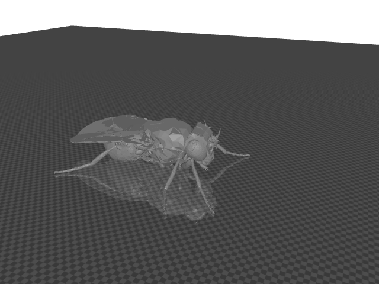

自律歩行（F06）
未達 — 未検証
保存済みの実験結果 f06-seed1-closed-loop-10s-20260917（10秒・seed 1・実感覚入力→CNS→筋→MuJoCoの閉ループ記録）を、
映像と記録データの同期表示でそのまま再生します。これは未較正のシミュレーション記録であり、
実写・生体記録ではありません。補間・新規シミュレーション・歩行達成の主張はありません。

未解決の明示：必須運動ユニット 5件（MNhl87/88系・右前脚1件）と転写テンプレート腱 12件は、
元CSV・MaleCNS注釈・接続推定のいずれでも根拠が得られず未割当のままです。
詳細は監査レポート outputs/f06-motor-tendon-resolution-20260919 を参照してください。